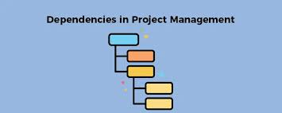

In project management planning and scheduling are going to be your keys to success. One of the most important steps in project management is creating a schedule to outline the tasks, timelines, and dependencies needed in order to complete your project successfully. I am going to talk about the basics of creating your project schedule, including defining tasks and dependencies to allow for smooth project execution.
The Importance of Project Scheduling
Project scheduling is like a set of instructions your team follows to guide them through the project's life. Your schedule will help achieve your end goals efficiently and within the time you set for it. A well defined project schedule will set clear objects by breaking down the project into manageable tasks and set achievable goals. Your schedule should also allow you to allocate resources effectively by understanding when and where they will be needed. Another important aspect of a well defined project schedule is that it improves time management by helping prioritize tasks and ensuring that they are completed on time.. Lastly your project schedule should keep all stakeholders informed about progress, deadlines, and potential bottlenecks.
Define Tasks
Managing your tasks is incredibly important in project scheduling. Tasks are going to be the small jobs that must be done to create your final deliverable. Defining tasks is your first step towards proper project management. To define your tasks effectively you can follow these basic steps.
Brainstorm tasks: You will want to begin by listing any and all activities required to complete the project. You should encourage your team members to add their input for a more comprehensive list.
Break Down Complex Tasks: Break down your more complex tasks into smaller and more manageable sub-tasks. This will make it easier to understand of all the work involved
Organize Tasks: Arrange tasks in a sequence of when they should be done in order to allow for a smooth flow of work. I recommend you start with foundational tasks and then build upon them.
Assign Responsibilities: This step can vary based on what method of project management you are using. Assign each task to a team member or group based on their skills and experience.

Understanding and Defining Dependencies
Dependencies are essentially the sets of relationships that tasks have with each other and what needs to be accomplished before another task can start. Tasks can have preceding tasks and succeeding tasks. Preceding tasks rely on the succeeding tasks; in other words the predecessor task defines the start or finish date of its successor. There are four main types of task dependencies:
Finish to Start: The dependent task cannot start until the preceding task is completed
Start to Start: The dependent task cannot start until the preceding task has started
Finish to Finish: The dependent task cannot be completed until the preceding task is completed
Start to Finish: The dependent task cannot be completed until the preceding task has started
By effectively creating dependencies you will ensure that work flows smoothly and you avoid bottlenecks. Establishing dependencies is a very important and sometimes difficult step in creating your project schedule.
Gantt Charts
Gantt charts can be an incredibly powerful tool for visualization. These charts can visualize project schedule, tasks, and dependencies. This tool can illustrate work that gets completed over a period of time and how it relates to the time planned for the work. It can include start and end times for tasks, dependencies between all the tasks and more. There is plenty of software available online to create these charts but you could also use something as simple as excel or google sheets. I'll give an example of a Gantt chart below.
As you can see from the example the chart lists all the tasks on the left column and has the start dates and end dates. Also the chart shows the dependencies in the delivery timeline graph on the right. Heres a link to a well known Gantt Chart Creator.
When creating your project schedule keep these ideas in mind
Be Realistic: Create achievable goals and deadlines based on the difficulty of tasks and the available resources. Do not set yourself and your team up for failure by creating unrealistic timelines
Monitor and Update: It is important to regularly review and update the schedule in order to reflect any changes in your project requirements.
Account for Contingencies: Factor in buffer time for any unexpected issues that could arise during the project
Communicate clearly: Ensure that all team members understand their roles, responsibilities, and the project schedule.
Conclusion
Creating an effective project schedule is important to ensure that your projects run smoothly. You will need to define tasks, understand dependencies and get a good understanding of when and who will do tasks and by what time. An effective way to manage this is by using Gantt charts to help visualize all of this. By doing your research and taking your time you can create an effective project schedule to guide your team to successful project completion.word